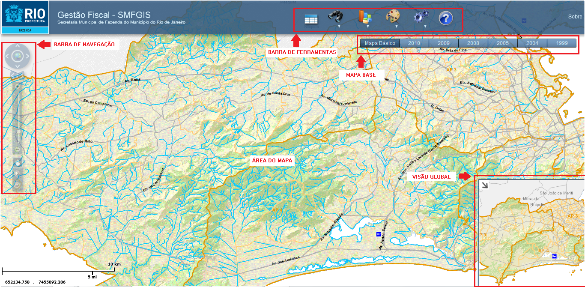

Visão Geral
Após realizar a Autenticação na aplicação Gestão Fiscal – SMFGIS o usuário tem acesso a Interface Principal do sistema.

Esta interface é composta de:
- Área do Mapa;
- Barra de Navegação;
- Barra de Ferramentas;
- Mapas Base;
- Visão Global (Overview);